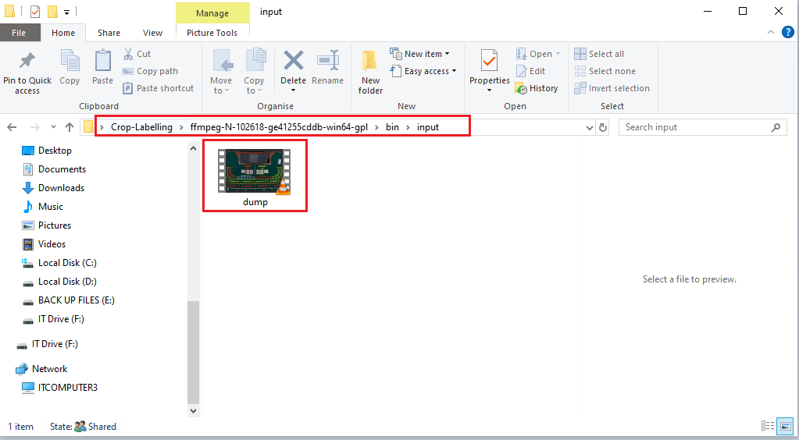
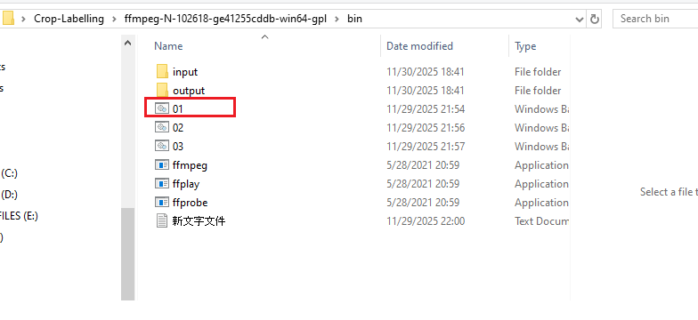
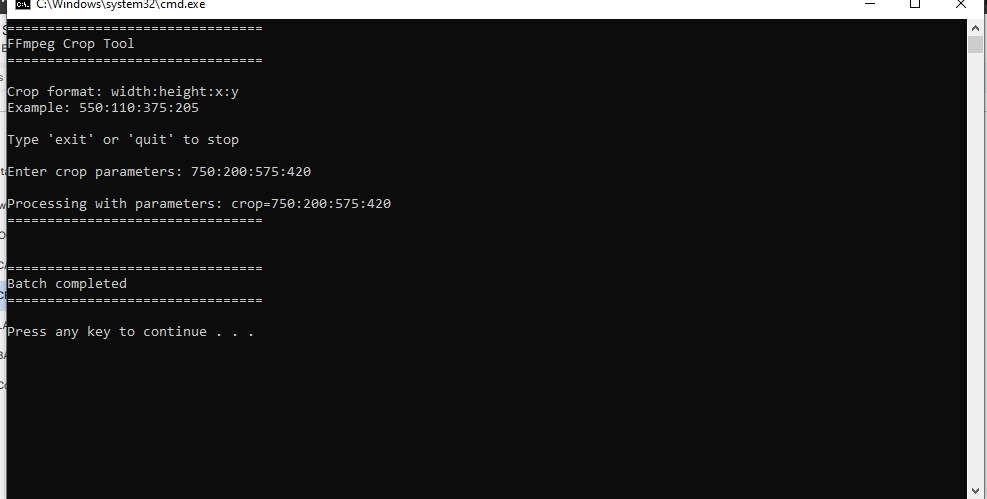
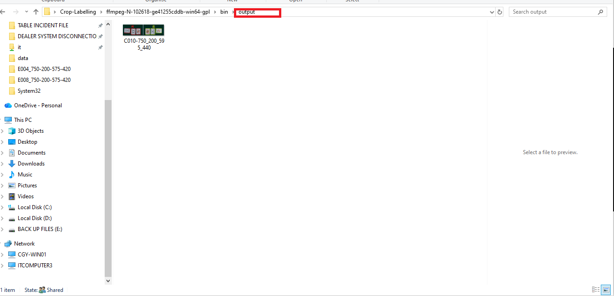
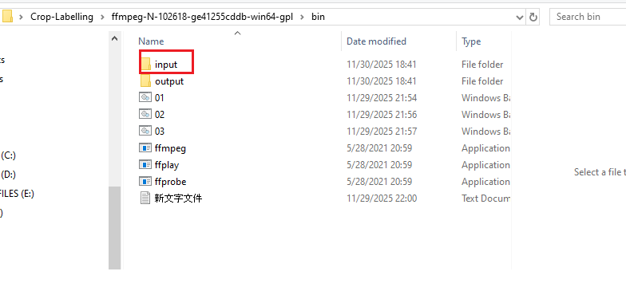
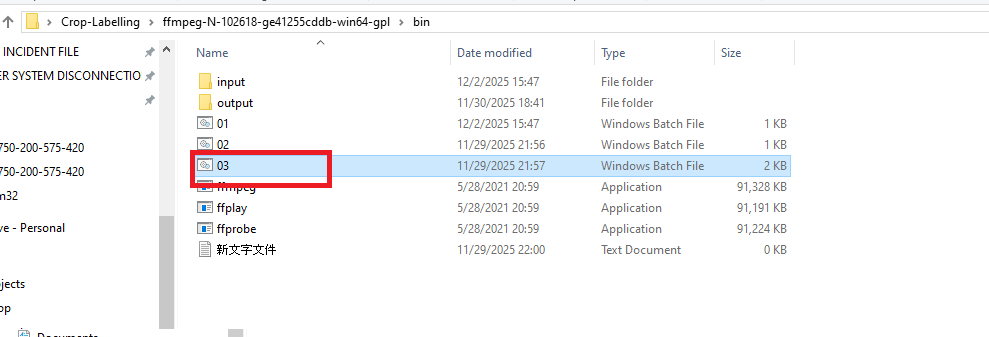
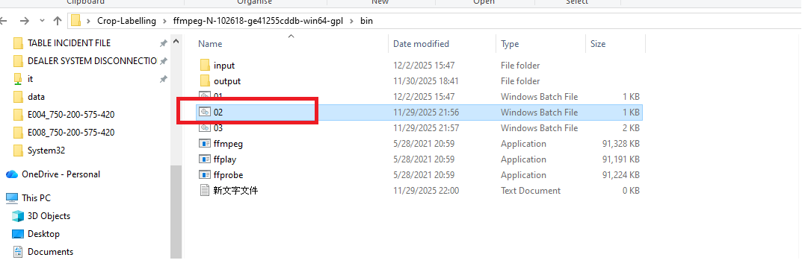

裁剪與裁剪參數
CROPPING and CROP PARAMETERS
⚠️ 重要提示: 這將用於辨識系統中的標記
操作步驟
-
確保IP攝像頭的直播功能正常運作
- 訪問裁剪文件夾
- 路徑:
Desktop\Crop-Labelling\ffmpeg-N-102618-ge41255cddb-win64-gpl\bin
-
在桌面上放置卡片並運行
01.bat文件
01.bat文件將錄製一段視頻 (.mp4)，視頻將保存到INPUT文件夾

- 打開 INPUT 文件夾查看視頻（保存的視頻名稱為 DUMP）

-
檢查 INPUT 文件夾中保存的視頻文件
- 驗證保存的視頻後，運行
02.bat文件

此批處理文件將自動運行 INPUT 文件夾中保存的視頻。
- 使用 VLC 播放視頻，並從 VLC 截取每一輪卡片的截圖（Shift+S）（百家樂規則）。
- 驗證保存的視頻後，運行
-
所有截圖應放置在 INPUT 文件夾中
（VLC 截圖路徑可以修改為 INPUT 文件夾）
- 運行
03.bat，此批處理文件將裁剪 INPUT 文件夾中的截圖圖像

- 運行
03.bat文件後，您需要輸入特定的裁剪參數，然後按 Enter。 - 示例參數:
750:200:575:420

- 裁剪後的圖像將保存到
OUTPUT文件夾

- 運行
📊 重要提醒
電子表格中的裁剪參數也應該更新。
01.bat 文件配置
